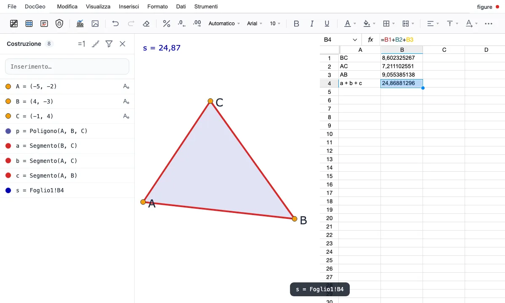

Il foglio di calcolo
Una scheda di DocGeo può contenere un foglio di DocCells, il foglio di calcolo di DocTools: accanto alla figura, o da solo nella sua scheda. La figura e le celle si leggono a vicenda, in tempo reale.

Nell’esempio qui sopra, l’insieme di Mandelbrot:
-
la colonna C calcola l’orbita di 0 per z ↦ z² + C, dove C è
il punto verde della figura: C3 contiene
[0; 0], C4=GEO("C")e C5=C4^2+GEO("C"), copiata in basso fino a C5002. Una lista di due numeri si calcola come un punto della figura, cioè come un numero complesso; -
la colonna D tiene solo i termini il cui indice, nella
colonna B, è compreso tra gli slider Ln e
Un, letti da
GEO("L_n")eGEO("U_n"); -
la figura rilegge questi termini con
c = !D3:D5001e li disegna, uniti da segmenti, cond = Lista(c).
Quando si trascina C, i 5000 termini vengono ricalcolati e la linea segue durante il movimento: resta limitata finché C è nell’insieme, e sfugge quando lo si porta fuori.
Aprire questa figura in DocGeo
Aggiungere un foglio di calcolo
| Azione | Come |
|---|---|
| Accanto alla figura | File › Vista › Nuova vista foglio di calcolo: una colonna in più, a destra, con un foglio vuoto; le colonne prendono la stessa larghezza (più viste) |
| Nella sua scheda | File › Nuova scheda foglio di calcolo: una scheda «Foglio1», «Foglio2»…, che contiene solo un foglio (cartelle di lavoro) |
| Ridimensionare, spostare | trascinare la separazione delle colonne; File › Vista › Sposta la vista a sinistra o a destra, quando la vista foglio di calcolo è attiva |
| Eliminare | File › Vista › Elimina la vista foglio di calcolo: la vista e le sue celle scompaiono, la figura riprende lo spazio. Una scheda foglio di calcolo si elimina come ogni scheda. |
- Una scheda ha al massimo una vista foglio di calcolo: Nuova vista foglio di calcolo è disattivato quando ne ha già una.
- Una vista foglio di calcolo mostra un solo foglio, senza schede dei fogli. Per lavorare su più fogli, si creano più schede foglio di calcolo, che si leggono tra loro (vedi sotto).
- Aggiungere o eliminare una vista foglio di calcolo si può annullare, come le altre azioni sulle viste.
I menu e i pulsanti del foglio di calcolo
Un clic o la pressione di un tasto nelle celle rende attiva la vista foglio di calcolo. Le barre di DocGeo lasciano allora il posto a quelle del foglio di calcolo, alla stessa altezza: sotto non si sposta nulla.
- La barra dei menu mantiene File, seguito dal menu DocGeo, poi dai menu del foglio di calcolo.
- La barra dei pulsanti del foglio di calcolo (formato dei numeri, carattere, grassetto, colori, bordi, allineamento…) sostituisce la barra delle azioni di DocGeo.
- Il menu DocGeo offre ciò che resta utile: Cronologia della costruzione, Tavolozza degli strumenti, Proprietà e il Manuale d’uso.
- Si torna alle barre di DocGeo con un clic nella figura o nel pannello «Costruzione», scrivendovi una riga, o cambiando scheda. In una scheda foglio di calcolo, le barre del foglio di calcolo restano.
- Una finestra di dialogo del foglio di calcolo (formattazione condizionale, formato dei numeri…) vela tutta la finestra di DocGeo finché non viene chiusa.
Il pannello «Costruzione» resta disponibile in una scheda foglio di calcolo (DocGeo › Cronologia della costruzione): un oggetto scritto lì è calcolato senza essere disegnato, e le celle di quella scheda possono leggerlo.
Quando DocGeo è incorporato in un’altra pagina, come DocTools, non ha barra dei menu: il foglio di calcolo mantiene le sue barre in cima alla sua colonna.
La figura legge le celle
Una formula della figura designa una cella della vista foglio di
calcolo della scheda con un punto esclamativo seguito
dall’indirizzo della cella: !B3.
| Scrittura | Valore |
|---|---|
!B3 |
la cella B3 |
!B2:B21 |
un intervallo di una riga o di una colonna: una lista di valori |
!A1:C3 |
un rettangolo: una lista di righe, ognuna una lista |
Foglio1!B3
|
la cella B3 di una scheda foglio di calcolo |
'Figura 1'!!B3 |
la cella B3 della vista foglio di calcolo di un’altra scheda |
A = (!B1, !B2)
r = !B3
L = !A1:A10-
L’indirizzo si scrive con lettere maiuscole poi cifre
(
B3,AA12), senza$, subito dopo il punto esclamativo. La negazione di un oggetto chiamato A1 si scrive!(A1). -
Un numero, un testo, un booleano o una lista è letto così
com’è; una data è letta come un numero. Una cella contiene
una lista scritta tra parentesi quadre,
[2; 1], o calcolata:=[2; 1]*3. Una cella vuota o in errore (#DIV/0!…) dà un valore indefinito: l’oggetto che la legge non è disegnato. - Appena una cella cambia, per una scrittura o per il calcolo del foglio, gli oggetti che la leggono sono ricalcolati e ridisegnati.
- Un riferimento è solo una parte di formula: non crea alcun oggetto. Un punto letto nelle celle, come A qui sopra, è calcolato: non si trascina con il mouse. Per spostarlo, si cambiano le celle.
Indicare le celle con il mouse
Mentre si scrive una riga nel pannello «Costruzione», non serve
digitare l’indirizzo: un clic su una cella della vista foglio
di calcolo inserisce !B3 al cursore, e un
trascinamento su più celle inserisce l’intervallo,
!A1:A20, aggiornato durante il movimento. Una
cornice tratteggiata mostra le celle indicate; il cursore resta
nella riga, che si continua a scrivere. Fuori da una
digitazione, un clic nelle celle le seleziona come di
consueto.
Le celle di un’altra scheda
Il nome della scheda viene prima, tra apostrofi se contiene uno
spazio o un segno, come per
leggere un’altra scheda: Foglio1!B3. Se quella scheda ha anche una figura, si
raddoppia il punto esclamativo, 'Figura 1'!!B3,
perché 'Figura 1'!B3 designa l’oggetto B3 della sua
figura. Le sue celle sono lette come erano calcolate quando si è
lasciata quella scheda.
Le celle leggono la figura: GEO
In una cella, la funzione GEO legge il valore di un
oggetto della figura, designato dal suo nome tra virgolette.
=GEO("c")
=GEO("'Figura 1'!c")
=2*GEO("r")+1- Il valore è quello che leggerebbe una formula della figura nominando l’oggetto: lunghezza di un segmento, valore di un’espressione o di un cursore, testo, stato di una casella di controllo… Segue la figura mentre la si manipola.
-
Un punto è letto come la lista delle sue coordinate:
=GEO("A")dà[1; 2], con cui si calcola come con una lista:=GEO("A")*2. -
Un oggetto sconosciuto, indefinito, o che non è né un
numero, né un testo, né un booleano, né un punto, né una lista dà
#N/A. Il nome deve essere scritto nella formula:=GEO(A1)dà#VALUE!. -
GEO("'Figura 1'!c")legge l’oggetto c di un’altra scheda: è così che una scheda foglio di calcolo legge una figura. -
GEOha lo stesso nome in tutte le lingue. Esiste solo in DocGeo: in DocCells da solo, dà#N/A.
Indicare gli oggetti con il mouse
Mentre si scrive una formula in una cella (o nella barra della
formula), non serve digitare il nome di un oggetto: un clic su
un oggetto della figura inserisce GEO("A") al
cursore, oppure =GEO("A") se la cella era vuota. Un
clic su un altro oggetto, subito dopo, sostituisce il primo. La
formula resta in scrittura: la si continua, poi la si conferma
con Invio o la si annulla con Esc. La
vista foglio di calcolo resta attiva, e l’oggetto cliccato non
viene né selezionato né spostato. Fuori da una formula, un clic
nella figura si comporta come di consueto.
Riferimento circolare
Un oggetto letto da GEO non può dipendere da una
cella che dipende da lui. Se A1 contiene
=GEO("m")+1, ridefinire m con la riga
m = !A1 è rifiutato: «Riferimento circolare:
!A1».
Allo stesso modo, una formula di cella che chiuderebbe un ciclo con la figura è annullata con questo messaggio, e le celle riprendono il loro contenuto precedente. In un file che contiene comunque un ciclo, la lettura che lo chiude è indefinita.
Annullare e salvare
- Le celle hanno il proprio annullamento: Ctrl Z nelle celle, o i menu del foglio di calcolo. I pulsanti di DocGeo non annullano una scrittura nel foglio di calcolo.
-
Le celle, le loro formule e la loro formattazione sono
salvate con la figura, nello stesso file
.dgo. Ctrl S nelle celle, o File › Salva, salva tutto.
Per gli studenti
Il lettore di DocGeo, come una figura incorporata in una pagina web, mostra il foglio senza menu né pulsanti, con la sua barra della formula.
- Lo studente può scrivere nelle celle, come in un campo di inserimento: la figura segue.
- Il pulsante di reimpostazione restituisce le celle com’erano salvate.
- Queste scritture non fanno parte della risposta dello studente conservata da una pagina che incorpora la figura: solo gli oggetti della figura.
Il foglio di calcolo è un’applicazione a parte, caricata solo se
la scheda mostrata ne ha uno. Su un sito che ospita la propria
copia di DocGeo, la cartella doccells deve essere
pubblicata accanto a quella di DocGeo; altrimenti la vista
foglio di calcolo mostra «⚠ DocCells», e il resto della figura
funziona.